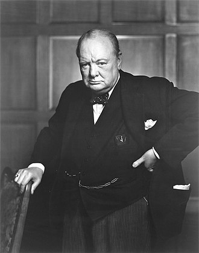
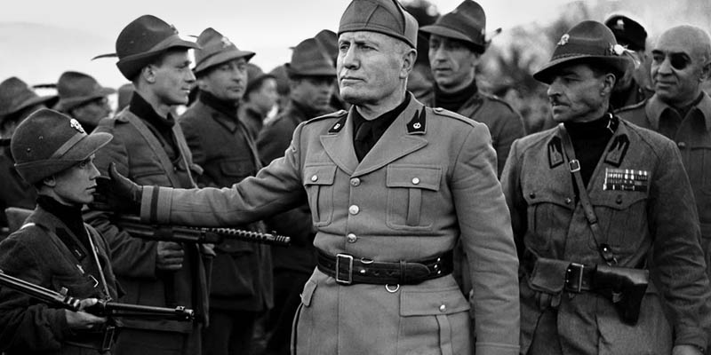
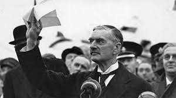
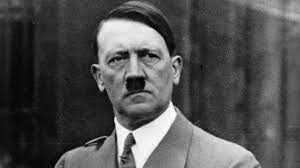

Winston Churchill
Primer ministro del Reino Unido

El primer ministro más famoso de la historia de Inglaterra ha pasado a la historia como un gran estadista metido en política que cambió el rumbo de Europa, pero más allá de eso fue también un gran bebedor, un fumador empedernido, le encantaba contar chistes verdes y sus enfados eran épicos. El premier despreciaba las encuestas, y en más de una ocasión mintió a la población acerca de las bajas del ejército en la contienda militar. Pero, a pesar de esto, este político británico fallecido el 24 de enero de 1965, sigue siendo para sus compatriotas el líder que logró que los aliados ganara la Segunda Guerra Mundial, así como un foco de inspiración en los momentos más duros del conflicto.
Leer más
Benito Mussolini
Duce de la República Social Italiana

Benito Mussolini fue un líder político y dictador italiano que fundó el Partido Nacional Fascista y gobernó Italia entre 1922 y 1943. Era llamado “el Duce” (el caudillo) y fue el artífice de un régimen totalitario que abolió libertades civiles y políticas, persiguió a la oposición, disolvió sindicatos, estableció un modelo de Estado corporativo y desarrolló el culto a la personalidad del líder.
Leer más
Neville Chamberlain
Primer ministro del Reino Unido

Arthur Neville Chamberlain fue un político conservador británico, que desempeñó el cargo de primer ministro entre el 28 de mayo de 1937 y el 10 de mayo de 1940. Su política de apaciguamiento ante la Alemania de Adolf Hitler culminó con el Pacto de Munich en septiembre de 1938, después del cual regresó a Gran Bretaña proclamando la existencia de lo que llamó la "paz en nuestra época".
Leer más
Adolf Hitler
Líder del Tercer Reich

Adolf Hitler fue el líder del movimiento nazi y acabó convirtiéndose en el dictador de Alemania. Ganó poder y popularidad durante los años de la Gran Depresión gracias a su oratoria propagandística hasta erigirse como máximo responsable político durante el Tercer Reich. Las ansias expansionistas del Führer fueron la causa del inicio la Segunda Guerra Mundial con la invasión de Polonia. Junto a otras potencias de Eje, como la Italia de Mussolini, se anexionó gran parte de Europa y el Norte de África. Su racismo y antisemitismo le llevaron a ordenar terribles limpiezas étnicas en campos de concentración y exterminio como Auschwitz en lo que se conoce como Holocausto. Aunque se llevaron a cabo varios atentados contra Hitler, habría que esperar a su suicidio en su búnker, cuando las tropas soviéticas tomaron Berlín en 1945 y Alemania dio por perdida la Segunda Guerra Mundial.
Leer más
Ver más entradas